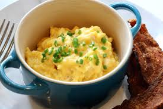

Test
Home Scrambled eggs are a great part of any meal, filling and nutrious, they are a good use for excess eggs and a quick meal to make.
To make scrambled eggs you will need the following:
To make scrambled eggs is quite easy simply follow the below steps